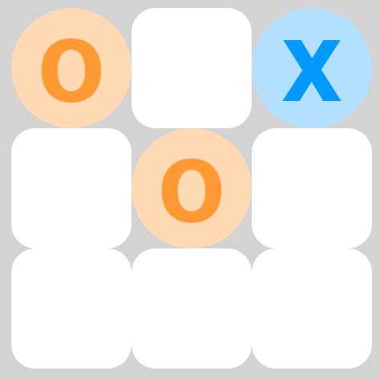

Ryan Holland
JavaScript Developer

Chrome extension
filters every page you visit to block spoilers from movies, TV, or sports.
More info You give it whatever keywords you want (like the names of a show's characters), and it replaces them and text around them with "[TEXT BLOCKED]".
There were some similar extensions in the Chrome store, but they had mixed reviews, hard-coded keywords, and often did not work on social media. Mine works for any websites and keywords, without blocking the entire page when it detects something.
It works by storing the user's keywords in the localStorage object, passing them from an omnipresent background script into each webpage's injected script, parsing them into regular expressions, and iterating through the DOM text nodes looking for matches. It runs this search once every second; this allows it to work on dynamically-loaded social media feeds and comment sections, a feature the similar extensions lack. It runs only on the active tab and causes no detectable drop in performance.
I really enjoyed making this because it is something people would actually use (some are using it right now.) I used vanilla JavaScript.
See code on Github

The computer AI begins by moving randomly, but makes smarter decisions as difficulty increases, until the best outcome you can hope for is a tie. Difficulty increases as you win games, or you can change it manually. I used a lot of CSS and JS.
See code on Codepen
Tic-Tac-Toe
The computer AI begins by moving randomly, but makes smarter decisions as difficulty increases, until the best outcome you can hope for is a tie. Difficulty increases as you win games, or you can change it manually. I used a lot of CSS and JS.
See code on Codepen
<<<<<<< HEAD
A web page for a boutique gardening business, designed from a PDF file. Just HTML and CSS3.
=======
A site on which the URL can be changed without the page reloading, like on SoundCloud. This enables features such as streaming audio to persist while the user navigates the site. Manipulates the browser history and URL using history state commands. Back-end written in node.js.
See code on Github >>>>>>> a58e74a8808f57d93c1bffd9339a7e8a8b8f8cba
Business Web Page
A web page for a boutique gardening business, designed from a PDF file. Just HTML and CSS3.
=======
One Page Wonder
A site on which the URL can be changed without the page reloading, like on SoundCloud. This enables features such as streaming audio to persist while the user navigates the site. Manipulates the browser history and URL using history state commands. Back-end written in node.js.
See code on Github >>>>>>> a58e74a8808f57d93c1bffd9339a7e8a8b8f8cba
"Simon" game
It flashes buttons in a random sequence; you have to repeat them in order. "Strict Mode" means you have to start over when you answer incorrectly. I used Bootstrap (for its grid system) and JQuery.
See code on Codepen

Wikipedia searcher
It uses the Wikipedia API to search for articles matching whatever the user types into the search box, updating as they type, letter-by-letter, like Google Search's Auto-Complete function. I used JQuery.
See code on Codepen
<<<<<<< HEAD
A site on which the URL can be changed without the page reloading, like on SoundCloud. This enables features such as streaming audio to persist while the user navigates the site. Manipulates the browser history and URL using history state commands. Back-end written in node.js.
See code on Github
One Page Wonder
A site on which the URL can be changed without the page reloading, like on SoundCloud. This enables features such as streaming audio to persist while the user navigates the site. Manipulates the browser history and URL using history state commands. Back-end written in node.js.
See code on Github
=======
>>>>>>> a58e74a8808f57d93c1bffd9339a7e8a8b8f8cba
Calculator, or should I say a COOLculator? ... CalCOOLator?... I probably shouldn't.
Responsive page based on a PSD. Work in progress, awaiting their next instructions. Made with Bootstrap, and custom JavaScript to make the 4 divs at the bottom always match heights.
Local weather viewer, using the HTML5 feature of getting the user's location, and a weather API.
Web dev newsfeed: Really just a CSS styling of a newsfeed API. Articles are ranked by age, and highlighted by upvote count.
Twitch stream status viewer, which uses an API to show whether a list of streamers are online. This was the first project where I had to use callbacks and wrangle with the asynchronous nature of JavaScript.
Work/break timer, a countdown that tells you when it's time to chillax and when it's time to workax. Also known as a "Pomodoro clock".
A quote generator, dispensing ancient wisdom. That I made up.
Other projects:
Poll: A simple React exercise.Calculator, or should I say a COOLculator? ... CalCOOLator?... I probably shouldn't.
Responsive page based on a PSD. Work in progress, awaiting their next instructions. Made with Bootstrap, and custom JavaScript to make the 4 divs at the bottom always match heights.
Local weather viewer, using the HTML5 feature of getting the user's location, and a weather API.
Web dev newsfeed: Really just a CSS styling of a newsfeed API. Articles are ranked by age, and highlighted by upvote count.
Twitch stream status viewer, which uses an API to show whether a list of streamers are online. This was the first project where I had to use callbacks and wrangle with the asynchronous nature of JavaScript.
Work/break timer, a countdown that tells you when it's time to chillax and when it's time to workax. Also known as a "Pomodoro clock".
A quote generator, dispensing ancient wisdom. That I made up.
About Me
I graduated with a BS in Geology from the University of Houston in Summer 2015 (having taken Calculus 1, 2, and 3.) I had tried to do research with a professor, but she chose someone with programming experience instead. That inspired me to try some basic scripting, and I realized it was a lot of fun. I enjoy the crossover between art and logic. (Before my BS, I studied art.)
I have worked as an art teacher, guitar tutor, waiter, and bartender; my hobbies include playing music, reading, gaming, and hiking.
I am familiar with the basics of SEO/Internet marketing, animation (2D and 3D), Flash, and Photoshop.
I have worked as an art teacher, guitar tutor, waiter, and bartender; my hobbies include playing music, reading, gaming, and hiking.
I am familiar with the basics of SEO/Internet marketing, animation (2D and 3D), Flash, and Photoshop.